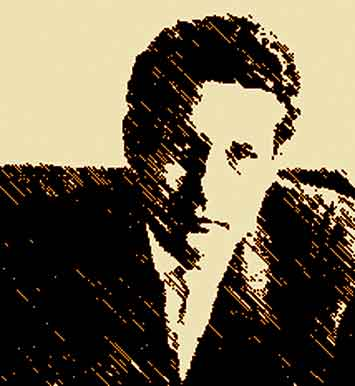
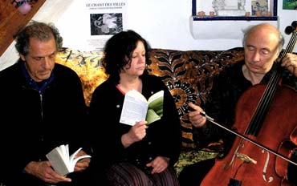

Colombe FRÉZIN
Musicienne -percussions, chant- depuis 1974, dans la mouvance "folk".
Elle a travaillé en tant que musicienne et comédienne au sein
de la compagnie lotoise "l'Oboubambulle" de 1985 à 1999. Elle
participe à la collection de disques "poêtes et chansons"
(éditions E.P.M.) depuis 2002.
Serge BOUZOUKI
Musicien (tous instruments à cordes) depuis 1972 dans
la mouvance "folk". Il fut aussi associé à l'aventure
lotoise "Oboubambulle",jusqu'en 2001. Il est actuellement, preneur
de son et directeur artistique et est la cheville ouvrière d'une trentaine
de CD pour la collection "poètes et chansons". Pour la lecture
de "Pierre de soleil, il officiera comme musicien avec une guitare à
12 cordes parfois malmenée, parfois caressée, toujours adorée!

Jean-Luc AXELRAD
Il travaerse la vie comme un voyageur en quête d'aventures.
Parfois elles naissent des hasards de rencontres mais elles avortent aussi par
impossibilité d'être. Passionné de littérature, il
fouine et découvre de passionnants auteurs tombés dans l'oubli
ou qui n'ont eu qu'un cercle restreint de lecteurs. Homme de paroles, son plaisir
est de partager ses découvertes par les lectures qu'il donne régulièrement.

Comme un long cheminement quasi-somnanbulique, sautant d’un plan à
un autre, le poème est en train de s’écrire, par afflux,
résurgences, à l’intérieur d’un cycle. C’est
toujours la quête du présent, de la vie immédiate, pendant
que se constitue un nouvel ordre amoureux, qui n’est en core que rêvé,
car l’Histoire reste assoupie.
C’est la présence, comme un instant qui accueille toutes les
silmultanéïtés : la nuit s’est entrouverte, les
désirs s’inscrivent dans le monde qui devient alors réel.
Tout communique. Spendeur. ...
Jean-Luc Axelrad
Un sauce de cristal, un chopo de
agua,
un alto surtidor que el viento arquea,
un árbol bien plantado mas danzante,
un caminar de río que se curva,
avanza, retrocede, da un rodeo
y llega siempre:
un caminar tranquilo
de estrella o primavera sin premura,
agua que con los párpados cerrados
mana toda la noche profecías,
unánime presencia en oleaje,
ola tras ola hasta cubrirlo todo,
verde soberanía sin ocaso
como el deslumbramiento de las alas
cuando se abren en mitad del cielo, ...
Un saule de cristal, un peuplier d'eau sombre,
un haut jet d'eau que le vent arque,
un arbre bien planté mais dansant,
un cheminement de rivière qui s'incurve,
avance, recule, fait un détour
et arrive toujours:
un cheminement calme
d'étoile ou de printemps sans hâte,
une eau aux paupières fermées
qui jaillit toute la nuit en prophéties,
unanime présence en houle,
vague après vague jusqu'à tout recouvrir,
verte souveraineté sans crépuscule
comme l'éblouissement des ailes
quand elles s'ouvrent dans le milieu du ciel, ...
Octavio PAZ est né en 1914 à Mexico. En 1931,
il fonde la revue Barandal et publie son premier poème. Dès
1945, il est membre du corps diplomatique, il voyage et rencontre Breton,
Michaux, Supervielle, ...
En 1968, après le massacre des étudiants à Mexico, il
démissionne de son poste d’ambassadeur et fonde la revue Vueta.
En 1976, il reçoit le prix Nobel de Littérature. Il meurt le
19 avril 1998 à Mexico.
Samedi 27 janvier 2007
20h30 précises au Garage Donadieu
Participation au chapeau